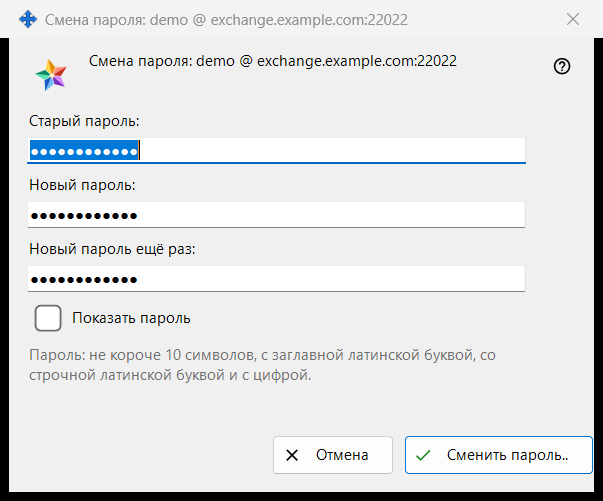
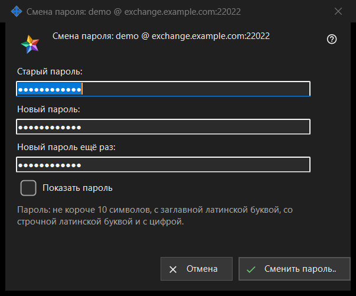

Смена пароля
Назначение
Меняет пароль учётной записи обмена, в которую вошёл этот ПК. Открывается кнопкой «Сменить пароль..» в группе «Учётная запись обмена» настроек Share Manager; кнопка видна, только когда учётная запись на связи. В заголовке окна учётная запись названа как логин @ сервер. Само окно ничего не отправляет: оно проверяет введённое и возвращает его, отправляет подключение этого ПК, а последнее слово за сервером.


Порядок действий
- В настройках Share Manager найдите группу «Учётная запись обмена» и нажмите «Сменить пароль..».
- Введите «Старый пароль:».
- Введите «Новый пароль:» и повторите его в поле «Новый пароль ещё раз:».
- Отметьте «Показать пароль», чтобы проверить три поля.
- Нажмите «Сменить пароль..»; если появилась строка предупреждения, исправьте поле и нажмите снова.
- Прочтите ответ, показанный в группе.
Элементы окна
Три поля
Старый пароль, новый пароль и его повтор. Все три поля скрыты; одна отметка «Показать пароль» раскрывает их сразу и не запоминается. При закрытии окна поля очищаются.
Правило пароля
Строка под полями: «Пароль: не короче 10 символов, с заглавной латинской буквой, со строчной латинской буквой и с цифрой.» Окно проверяет это сразу, поэтому ответ приходит до отправки.
Строка предупреждения
Кнопка проверяет по порядку: «Укажите старый пароль.», «Пароли в двух полях не совпали.», затем правило: «Пароль короче 10 символов.», «В пароле нет заглавной латинской буквы.», «В пароле нет строчной латинской буквы.», «В пароле нет цифры.». Первая найденная проблема останавливает проверку, окно остаётся открытым, ничего не отправляется.
Что происходит после нажатия
Если ввод подходит, окно закрывается, а группа показывает ответ. Успех: «Пароль сменён. Этот компьютер продолжает работать, а другие устройства учётной записи должны войти заново.» Другие ответы: «Старый пароль не подошёл.», «Слишком много попыток. Подождите минуту и повторите.», «Сервер отказал в смене пароля.» и «Нет связи с сервером. Подключитесь и повторите.». Если сервер отклонил слабый пароль, показана его собственная фраза.
Отмена и клавиши
«Отмена» или Esc закрывает окно, ничего не меняя; Enter нажимает «Сменить пароль..».
Настройки менеджера · Настройки общего доступа SFTP · Настройки сервера обмена